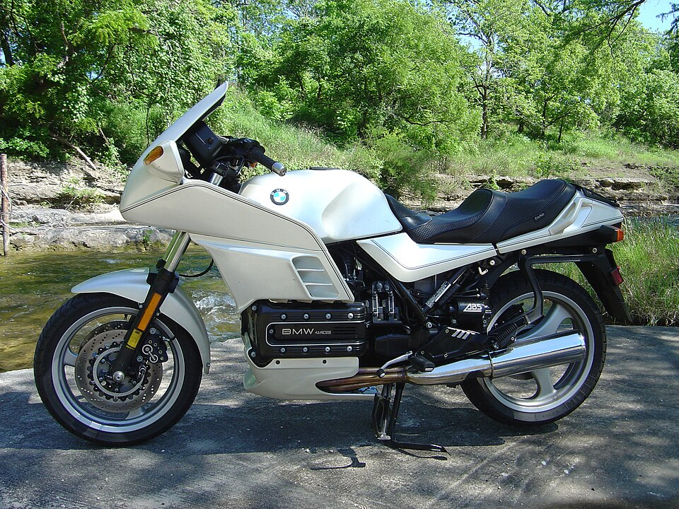
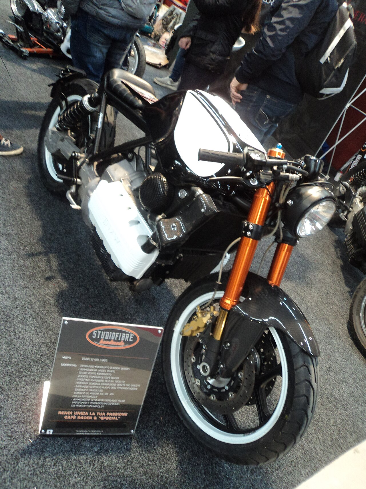
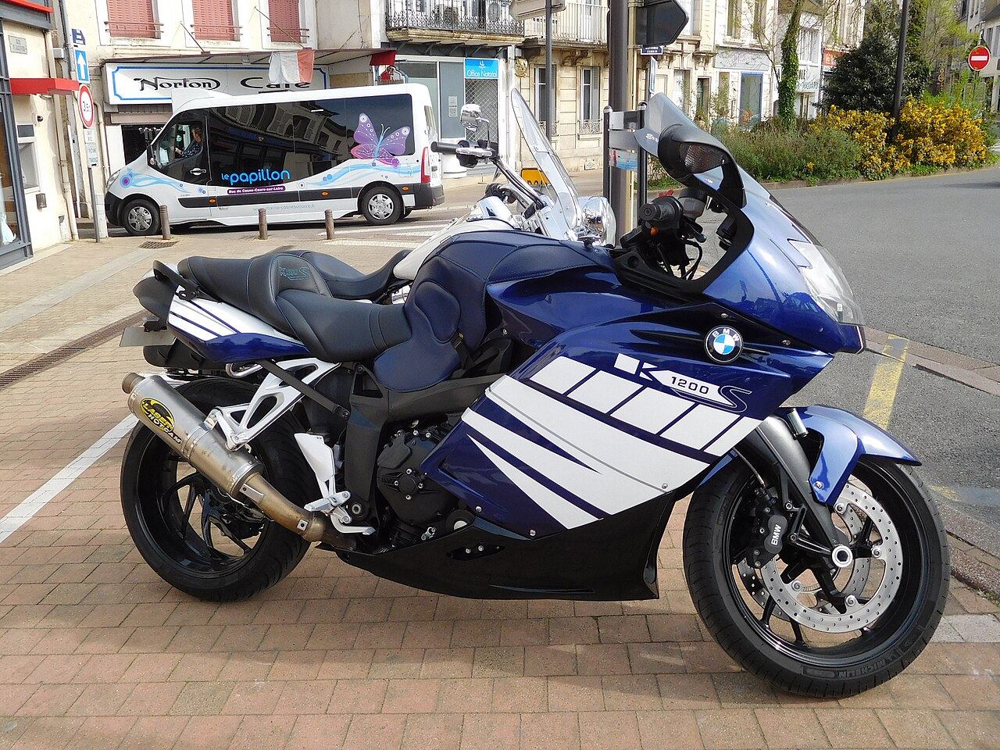
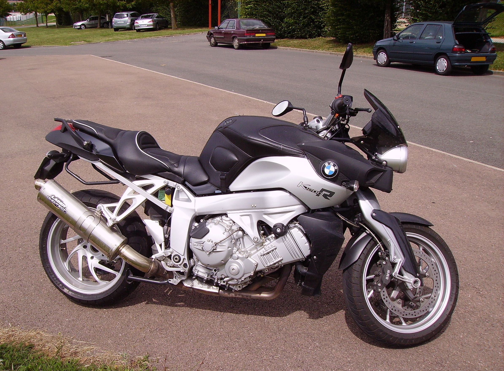
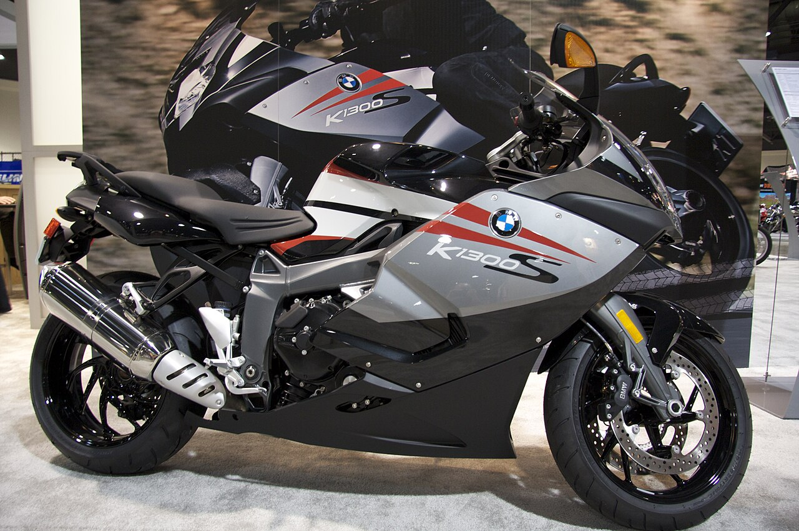
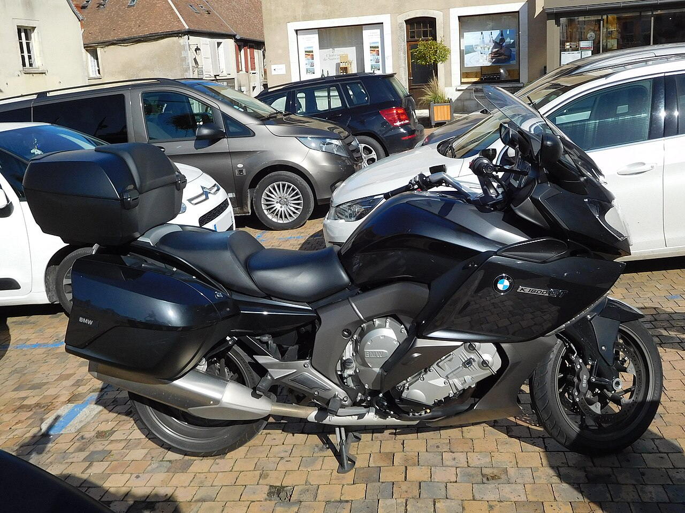
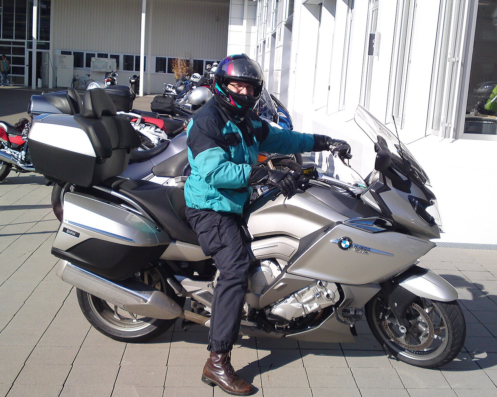

The K Bike
The Flying Brick dynasty — from 987cc bricks to 1649cc six-cylinder masterpieces. Crown jewel: the K1300S.

The K-Series began as an act of courage. In 1983, BMW broke entirely from its boxer tradition and mounted an inline-four on its side — creating the "Flying Brick" that would carry BMW Motorrad into the modern era. Four decades later, the K-Series has grown from 987cc to a silky 1649cc inline-six that is unlike anything else in production motorcycling.
BMW Motorrad engineers began Project 2000 — a secret development programme to build a fundamentally different motorcycle. The brief: modern emissions compliance, superior performance, and a completely new engine architecture. The boxer twin was beloved but its limitations were real: the wide cylinder heads limited cornering clearance and the air-cooling system was increasingly challenged by emissions regulations.
The K100 arrived at the Cologne Motor Show in September 1983 — and stunned everyone. An inline-four cylinder engine mounted longitudinally, lying on its side with the cylinders parallel to the ground. The crankshaft ran front-to-back along the centreline. The result: the lowest possible centre of gravity for an inline-four, excellent weight distribution, and a compact chassis. 90 hp, electronic fuel injection (a first for BMW Motorrad), and shaft drive. The press called it "the Flying Brick" — the name stuck.
BMW's modular K-platform produced the K75 — a 740cc three-cylinder using three-quarters of the K100 engine block with the fourth cylinder eliminated. The K75 was lighter (215 kg wet), more agile, and beloved by urban riders who found the K100 too large. The K75S with full fairing developed a devoted following, particularly in Europe. Over 40,000 K75s were sold — validating the platform's versatility.
The K1 arrived as BMW's most radical production motorcycle — a fully enclosed, aerodynamically optimised sportbike built on the K100 platform. Its 987cc engine was tuned to 100 hp and wrapped in bodywork designed by BMW's car division. The K1 achieved a drag coefficient of 0.36 Cd — extraordinary for a motorcycle of that era. Its yellow/red colour scheme became instantly iconic. Only 6,921 were built, making it a sought-after collectors' machine today.
BMW Motorrad was among the first manufacturers to offer ABS (Anti-Lock Braking System) as standard on production motorcycles — initially on the K100 and K75 ranges. This decision, made against industry convention that viewed ABS as unnecessary weight and complexity, proved visionary. ABS is now mandatory in most markets. BMW's leadership in motorcycle safety technology traces directly to the K-Series programme of the late 1980s and early 1990s.
The K1200S launched with a 1157cc longitudinal inline-four producing 167 hp — making it the most powerful production BMW motorcycle at the time and one of the most powerful sports tourers in the world. Its Duolever front suspension — a double-wishbone arrangement replacing conventional telescopic forks — eliminated fork dive under braking entirely. Top speed exceeded 280 km/h. The K1200 family expanded to include the K1200R (naked), K1200GT (tourer), and K1200RS (sport-tourer).
The K1200 evolved into the K1300S with a larger 1293cc engine producing 175 hp and an expanded electronics package including optional ESA (Electronic Suspension Adjustment) — the first semi-active suspension offered on a BMW sports tourer. The K1300R naked and K1300GT tourer completed the family, each offering class-leading power in their segments. The K1300S remained competitive with dedicated superbikes while carrying genuine touring capability.
BMW shocked the industry again in 2011 with the K1600GT — powered by a 1649cc inline-six engine producing 160 hp and 175 Nm of torque. The six-cylinder layout was chosen for smoothness: a perfectly balanced configuration that runs with zero first and second-order vibrations. At idle, the K1600 engine is so smooth that the tachometer needle barely moves. The GTL (Grand Tour Luxe) added integrated hard luggage, a full fairing with integrated LED lighting, and the highest seat height in the range. No other manufacturer has matched the K1600's six-cylinder configuration to this day.
BMW extended the K1600 platform to target the American touring market with the K1600B (bagger) and K1600 Grand America (premium tourer). The K1600B features a lower seat height, integrated panniers, and a forward-leaning bagger stance. The Grand America adds cruise control, heated seat, Adaptive Headlight, and — exclusively — a reverse gear driven by the starter motor, a first for a BMW motorcycle.
The original K100 launched in 1983 and established BMW's K-Series platform. Its longitudinal inline-four engine — mounted sideways so cylinders lay flat — was unlike anything else in production motorcycling. The nickname "Flying Brick" captured its shape exactly.
The genius of the K100's layout is its low centre of gravity. A conventional upright inline-four
sits high — the crankshaft, cylinders, and head stack vertically, raising the bike's mass.
BMW's engineers turned it 90 degrees: the crankshaft now runs front-to-back along
the bike's centreline, with the cylinders lying parallel to the ground.
The result is mass concentrated below the rider's knees. Combined with shaft drive (no
chain to maintain) and electronic fuel injection (a first for BMW Motorrad), the K100
was technologically five years ahead of most competitors.
The Monolever rear suspension — a single-sided swingarm with one central shock —
kept the drivetrain clean and allowed easy rear wheel removal. Its aesthetic was controversial
at launch; today it looks prescient.

The K1200 generation (2004–2009) represented the highest evolution of the longitudinal inline-four concept. 167 hp, Duolever front suspension, 280+ km/h top speed — and a full family of S, R, GT, and RS variants.
Conventional telescopic forks compress under braking — the front of the bike dives, the geometry
changes, and the rider experiences pitch. BMW's Duolever system eliminates this entirely.
Two wishbones (upper and lower) connect the front wheel hub to the frame through a central pivot.
A separate damper unit manages suspension movement. The geometry remains constant under braking —
exactly as on a double-wishbone car suspension.
The result: under maximum braking from 280 km/h, the K1200S maintains its riding position.
The rider can brake later and harder with more confidence, because the bike doesn't pitch
forward. Steering feel remains consistent from full acceleration to emergency braking.
No other production motorcycle manufacturer has adopted this system — it remains uniquely BMW.




The K1300S represents the final, refined apex of an idea that began in 1983: a longitudinal inline-four engine mounted on its side, spinning a shaft that drives the rear wheel with zero maintenance. By 2009 that engine had grown from 987cc to 1,293cc and from 90 hp to 175 hp. The K1300S added the electronics package the K1200S lacked — semi-active suspension, sharper fuel mapping, and a chassis tuned with seven additional years of feedback. It was the brick at its absolute best, and BMW discontinued the inline-four line in 2016. Nothing has replaced it.
The K1200S was extraordinary. The K1300S was better in every dimension — more displacement,
more power, more torque, and the electronics to deploy all of it with confidence.
The jump from 1157cc to 1293cc gave 8 additional horsepower and 10 extra Nm of torque — figures that
matter most in the midrange, where real-world overtaking happens. At 4,000–7,000 rpm the K1300S pulls
with a ferocity that no sport-tourer of its era could match.
The optional ESA (Electronic Suspension Adjustment) transformed the riding experience. Three
settings — Comfort, Normal, Sport — adjusted both front Duolever and rear Paralever damping
via a handlebar switch. Switching from Sport (track day) to Comfort (long motorway slab) took
two button presses. No stops, no tools.
Critically, BMW fixed the K1200S's one weakness: heat management. The K1300S runs measurably
cooler at low speed, making city traffic tolerable in a way the K1200S was not. It is the only
generation of the brick that works equally well in every environment.
Superbikes make 175 hp at the top of the rev range, in a narrow window between drama and disaster. The K1300S makes 175 hp in a broad, usable powerband — pulling hard from 3,500 rpm, peaking at 9,250, and pulling cleanly all the way to the limiter. The shaft drive removes chain snatch entirely. Throttle control at 200 km/h is serene, not terrifying.
Every other sports motorcycle uses telescopic forks that dive under braking — geometry shifts, trail changes, the front end loads unpredictably at the limit. The K1300S Duolever double-wishbone keeps front geometry perfectly constant under braking. Trail, rake, and wheelbase do not change. You can brake later, harder, and with more feedback than on any fork-equipped bike. It is genuinely a superior system that no other manufacturer adopted at volume.
BMW offered Electronic Suspension Adjustment as a factory option in 2009 — years before semi-active suspension became common. Three modes (Comfort / Normal / Sport) adjusted both axles simultaneously from a handlebar button while moving. The K1300S could be set up for a track morning and re-tuned for an Alpine pass afternoon without stopping. An engineering luxury that defined the machine's touring credentials as firmly as its outright performance.
Contemporary road tests consistently placed the K1300S in the same acceleration tier as the Ducati 1198 and Aprilia RSV4 — while the BMW also carried heated grips, luggage capacity, and a rider who arrived at the destination without exhaustion. Its power-to-weight ratio of 0.75 hp/kg was comparable to the fastest street-legal superbikes of 2009. The sport-touring category has never had a more capable machine.
2,000 km in a day. The K1300S could do it. Heated grips standard, windscreen adjustable, shaft drive eliminating chain anxiety, a low-maintenance inline-four with BMW dealer coverage across Europe. The tank range exceeded 300 km at legal speeds. The riding position is aggressive enough to feel athletic and relaxed enough to ride for eight hours without pain. No other motorcycle at its power level offered this combination.
BMW discontinued the K1300 line in 2016. The longitudinal inline-four — the "Flying Brick" engine architecture that began in 1983 — ended with the K1300S. No replacement was ever announced. The K1600 six-cylinder had different qualities. The S1000 is a race-derived hypersport. Neither fills the K1300S's role as the definitive fast-touring inline-four. It is, simply, the best expression of a 33-year engineering lineage.
In 2011, BMW added a sixth cylinder. The 1649cc inline-six in the K1600 is the only production motorcycle six-cylinder engine in the world. It produces 160 hp with a silky smoothness that no other engine configuration can match — and no other manufacturer has attempted to replicate it.
A straight-six engine achieves what engineers call perfect primary and secondary balance —
the firing pulses cancel each other out so completely that the engine produces virtually no
vibration at any rpm. This is the same reason Rolls-Royce, Jaguar, and BMW's own cars use
straight-six engines for their flagship models.
On a motorcycle, this means that at idle, the K1600's engine is so smooth that a cup of water
placed on the tank barely ripples. At motorway speeds, the vibration reaching the rider through
the handlebars and seat is less than most four-cylinder motorcycles.
The 1649cc displacement was chosen to give each cylinder a manageable 275cc — similar to a
Honda CB500 cylinder — keeping combustion temperatures and component stresses reasonable
while the overall displacement delivers effortless highway torque.
BMW packaged this 1649cc inline-six into the same physical width as a 1000cc inline-four from
a rival manufacturer — an engineering achievement that required custom manufacturing processes
for the cylinder block.


From the 1983 K100 to the current K1600 Grand America — four decades of evolution in one table. The K1300S column is highlighted: the peak of the longitudinal inline-four lineage.